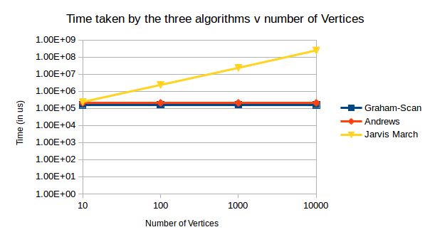

This project is a part of the coursework for the course Selected Toipcs in Computer Science (CS F441) under the guidance of Dr. Tathagat Ray.
DCEL is a datastructure used to represent a planar subdivision. The main idea in a DCEL is edges are oriented anti-clockwise inside each face. Since an edge borders two faces, each edge is replaced by 2 half edges, one for each face.
Monotonizing a polygon refers to converting a polygon into a y-monotone polygon. This is achieved by constructing a priority queue Q on the vertices and then handling the various types of vertices encountered. The types of vertices that will be encountered are Start Vertex, Split Vertex, Merge Vertex, Regular Vertex.
Algorithm:
MAKE_MONOTONE(Point_set): 1. Construct a priority queue Q on the vertices of P using their Y coordinates as priority. If 2 points have same Y coordinates, then the one with smaller x coordinates has a higher priority. 2. Initiate an empty balanced binary search tree T. 3. while Q is not empty: 4. do remove the vertex vi with the highest priority from Q. 5. Call the appropriate procedure to handle the vertex depending on its type. Separate routines will handle a start, split, merge and regular vertex.
Triangulate polygon takes y-monotone polygon stored in DCEL and returns its triangulation.
TRIANGULATE_MONOTONE_POLYGON(P): 1. Merge the vertices on the left chain and the vertices on the right chain of P into one sequence, sorted for decreasing Y coordinate. If two vertices have same Y- coordinate, then the left one comes first.Let u1,u2,u3...un. 2. initialize an empty stack S and push u1 and u2 into it. 3. for j<-3 to n-1: 4. do if uj and the vertex on top are in different chains 5. then pop all vertices from S 6. insert into D, a diagonal from uj to each of the popped vertex except the last one (bottom of stack). 7. push u(j-1) and uj into S 8. else pop one vertex from S 9. pop the other vertices from S, as long as the diagonals from uj to them are inside P. Insert those diagonals into P. Push the first vertex that has been initially popped, back into S. 10. Push uj into S. 11. Add diagonals from un to all vertices in stack except the first and last vertices.
The balanced binary search tree was implemented using the Standard Template Library (STL). The map data structure was used to implement the binary search tree. The ordering of the binary search tree can be decided by exploiting two facts - firstly, when an edge is inserted its ordering with respect to existing edges does not change until the existing edge is removed and secondly, edges are inserted in descending y-coordinate order of top edge. Thus, if the starting point of the edge lies to the left of an existing edge, the corresponding leaf will also lie to the left of the leaf containing the existing edge. The edge directly to the left of a vertex can be found out by using the lower bound function.
| Number of Points | Graham-Scan time (in us) | Andrews time (in us) | Jarvis March time (in us) |
|---|---|---|---|
| 10 | 58 | 48 | 61.2 |
| 100 | 244 | 230.4 | 497.8 |
| 1000 | 2582 | 2480.8 | 8525.4 |
| 10000 | 19377.2 | 28994.2 | 65278.4 |
| 100000 | 163436.2 | 210378.2 | 792890.4 |
| 1000000 | 1761554.6 | 2252025.4 | 8781688.8 |
All the three algorithms were made to run on a given number of points 5 times, each time the points were generated randomly, and the average of the running time was taken. From the graph, it is clear that Andrew’s and Graham Scan Algorithm are taking almost the same time for all the sets of points. On the other hand, Jarvis March on average takes more time than the other two algorithms. This is because the time consuming step in Graham and Andrews algorithm ,which is the step to sort the points , is run only once whereas in case of Jarvis March, the step to compute polar angle, takes the most time and is repeated a lot of times.

| Number of vertices | Graham-Scan time (in us) | Andrews time (in us) | Jarvis March time (in us) |
|---|---|---|---|
| 10 | 161413 | 210374 | 238600 |
| 100 | 162104 | 209545 | 2369044 |
| 1000 | 162210 | 209957 | 23435829 |
| 10000 | 159654 | 209138 | 246883120 |
All the three algorithms were made to run on a given number of points 5 times, each time the points were generated randomly, and the average of the running time was taken. From the graph, it is clear that Andrew’s and Graham Scan Algorithm are taking almost the same time for all the sets of points. Also, Andrew’s and Graham Scan Algorithm take almost constant time for all the vertices, further stating that they are not output dependent. Whereas time taking by Jarvis March keeps on increasing for number of vertices, proving that it is an output dependent algorithm.
After checking for Degeneracy, the following results were seen-
Algorithms in computational geometry are designed under the assumption of exact real arithmetic. However, in practical implementation of such algorithms, floating point arithmetic almost inevitably leads to robustness issues. While computing the Convex Hull of a set of finite points, such issues might lead to a hole or an extra edge in the Convex Hull. Most well-known algorithms use the signed area of three points in particular order to check whether a point lies to the left or right or on the directed line segment from the other two points. Testing whether a point lies to the right or left or on the directed line segment is subjected to numerical inaccuracy because of floating point computations.
In our assignment, we have used the method of signed area to find whether a point should be included in the Convex Hull, depending on whether it lies to the right/left/ or on the directed line segment. We have also used floating point arithmetic to find the minimum polar angle in Jarvis March algorithm, which faces similiar issues.
In order to test our program against robustness issues, we took few points in the cartesian space. Then we took three test cases, we found out that Andrew's Algorithm and Graham scan gave different results. This is due to the flipped ordering of vertices when computing the signed area. As a result of floating point multiplication, there is an error in precision which results in the inaccurate construction of Convex hull.
In order to tackle this problem, we can specify a small value 'epsilon'. If the abosulte value of signed area is less than epsilon, we consider it to be equal to zero. All values greater than epsilon are considered positive and all values less than negative epsilon are considered negative.
Given below are the snapshots of visualization of Convex Hull:-
| Test | Graham | Andrew | Jarvis |
|---|---|---|---|
| 1 | |||
| 2 | |||
| 3 |  |
 |
New test cases can be generated using the test_convex.py script. The test_convex.cpp file is responsible for executing the algorithms. All test cases must stored in <main_folder>/test_convex/ as .txt files. New test cases are created in this folder by default. Test cases are in the format as shown below. Each line represents a point with the first term for x-coordinate and the second term for y-coordinate. The two terms must be seperated only by a space.
0.56 0.45
4.5 5.1
100 0.6
1.34 6.7
There are four options for running the script.
1. Test pre-existing cases
python test_convex.py <executable_name> <algo_name> all-txt
2. Test on Gaussian distribution
python test_convex.py <executable_name> <algo_name> gaussian <no_of_test_cases> <no_of_sample_pts> <random_seed> <mean> <variance>
3. Test on Uniform distribution
python test_convex.py <executable_name> <algo_name> uniform <no_of_test_cases> <no_of_sample_pts> <random_seed> <max_value> <min_value>
4. Test for output sensitive algorithms
python test_convex.py <executable_name> <algo_name> output-sensitive <no_of_test_cases> <no_of_sample_pts> <no_of_hull_vertices>
NOTE: The parameter <algo_name> can take the arguments graham, jarvis or andrew to select the algorithm that must be exected.
To visualize the results, two .txt files are needed: an <input_file> which contains all the points in the sample space and <output_file> that contains all the points on the hull. Then, to visualize the results, simple run:
python plot_convex_hull.py <input_file> <output_file>